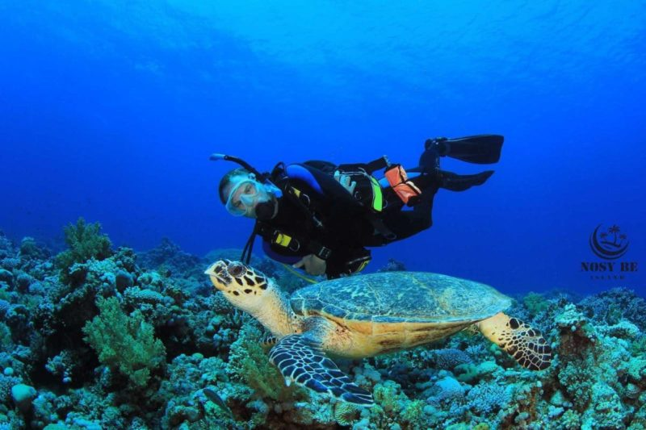
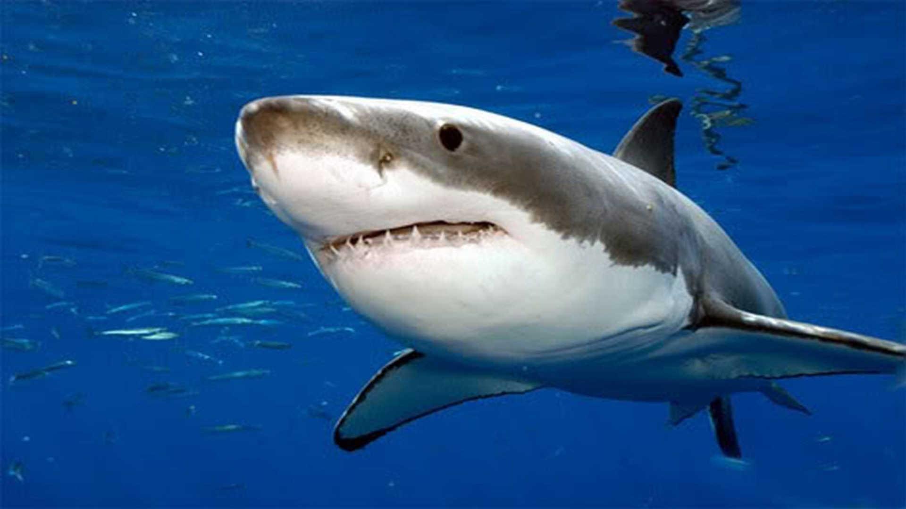
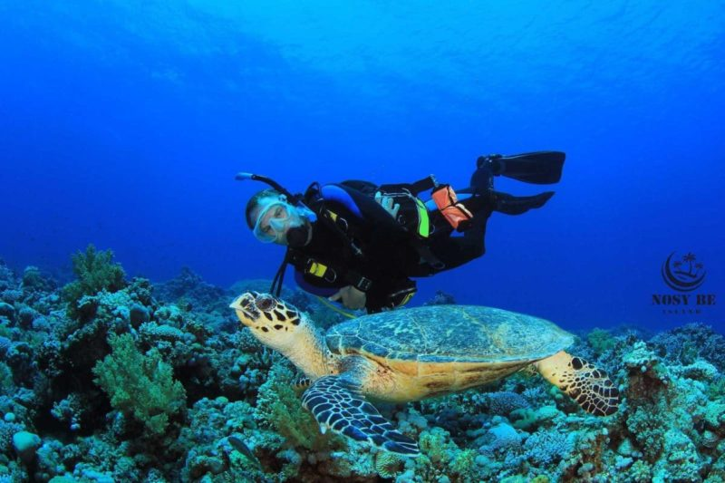
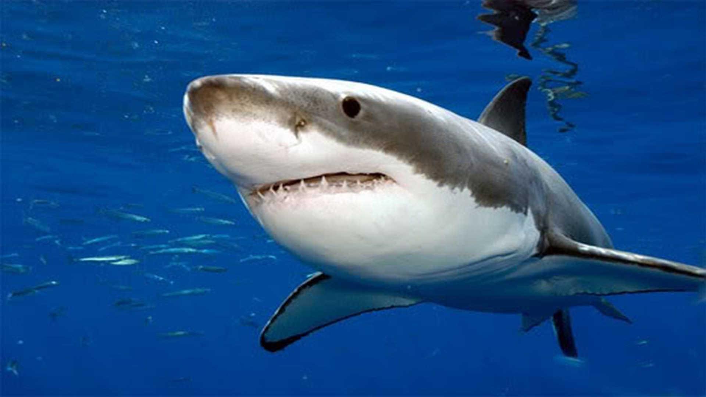
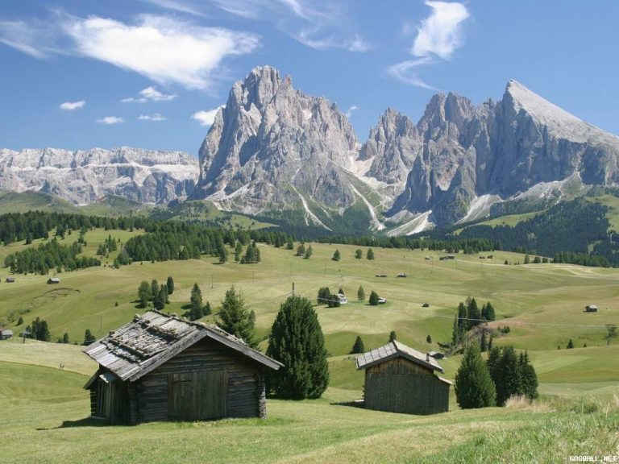
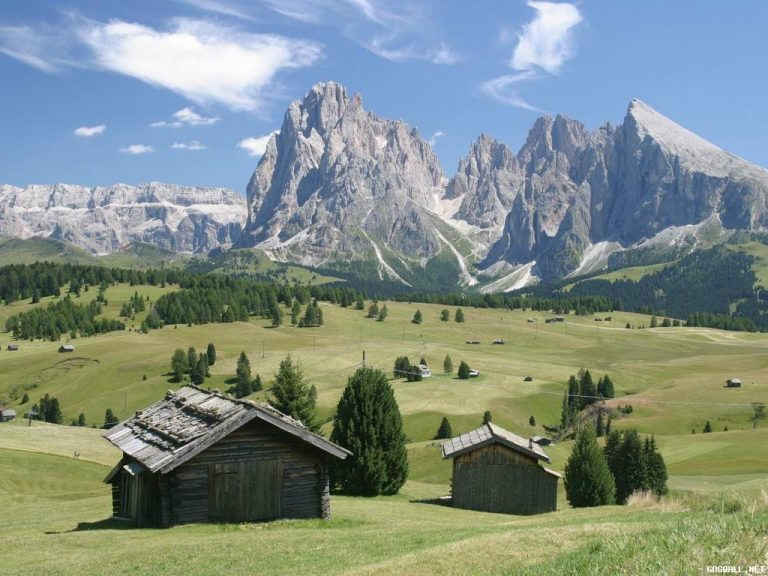
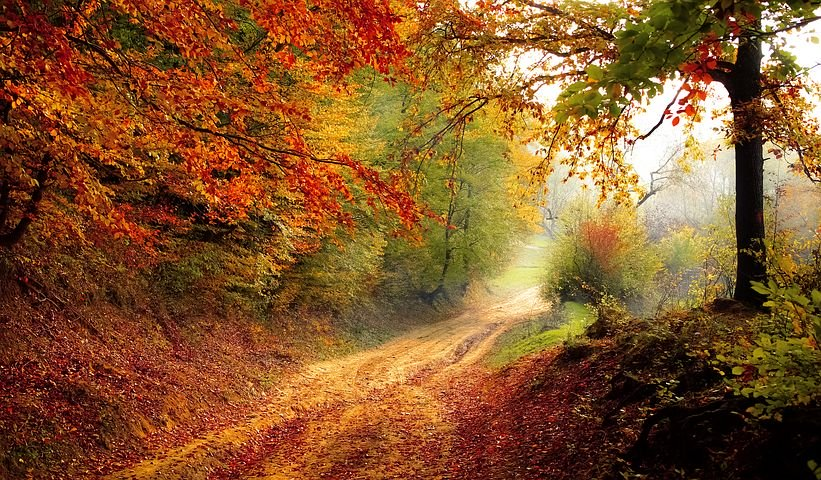
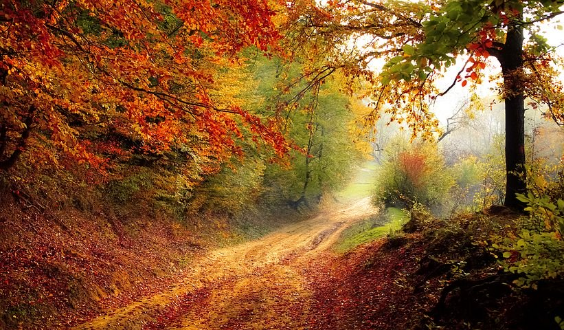

John Snow : SnowFlex
Being a photographer is first and foremost a passion. The one in the photo. Being a professional photographer also means having the rare privilege of being able to live from your passion.
 

 
